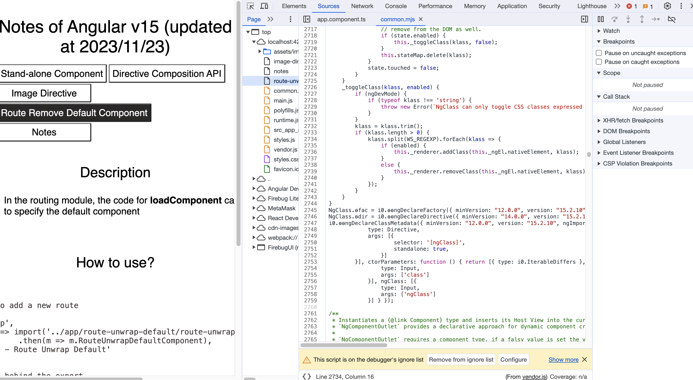
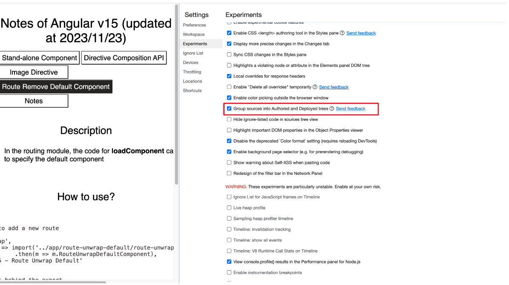
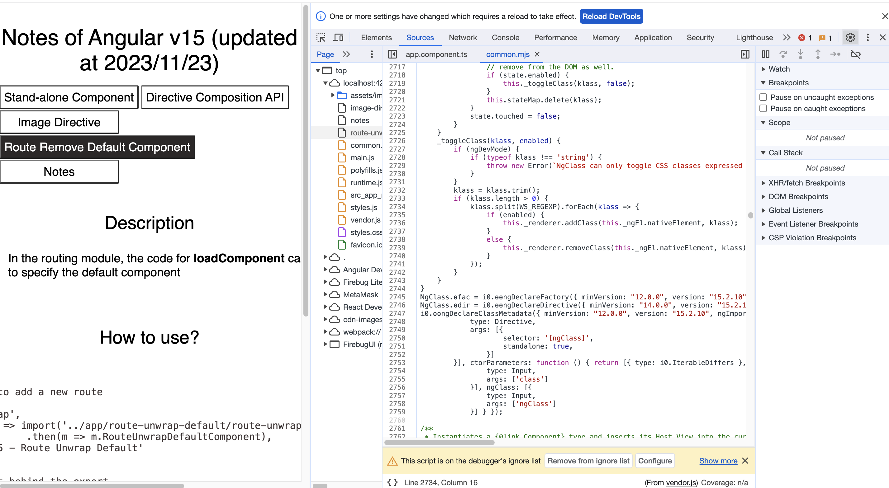

Description
We are able to navigate to the authored code nstead of the deployed code in the source panel. (Not limited to Angular v15)
How to navigate to the authored code
-
Before setting, we could only navigate to the deployed code from the source panel

-
Enable navigating to the authored code (DevTools > Settings > Experiments > Group sources into Authored and Deployed trees)

-
After setting, we could navigate to the authored code from the source panel

Reference